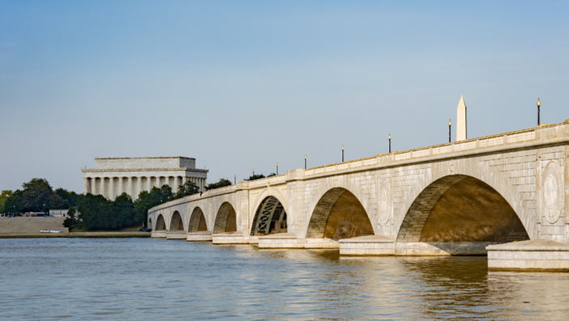
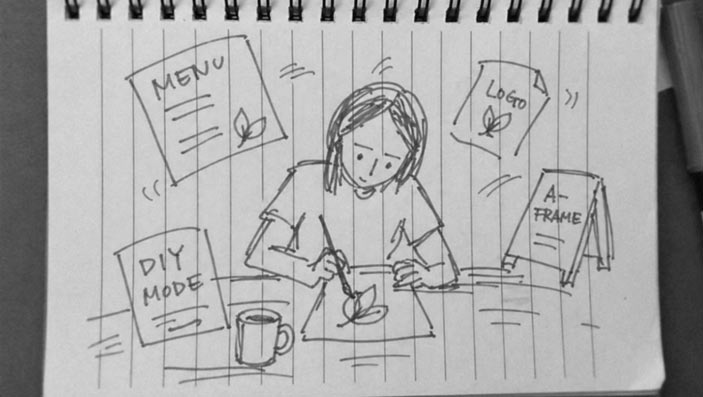

Honest Voice
A quiet space for long-form notes on branding, visual systems, packaging, and the
realities of making creative work hold up over time.

Washington, DC as a Design District
A quiet note on Washington, DC as a design environment — and how local businesses,
hospitality projects, cultural initiatives, and growing brands in the DMV area can use
identity, websites, and creative direction with more clarity.
Read the note

Why Businesses Are Often Afraid of Designers
A long-form reflection on why small businesses often distrust the design process,
and what practical, trust-building creative work can look like instead.
Read the note